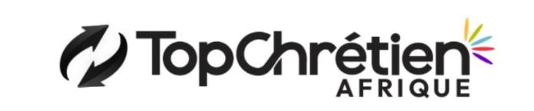

Des ressources pour nourrir votre foi chaque jour.
Une méditation quotidienne pour bien commencer la journée.
Le verset du jour à recevoir et à partager.
Un rendez-vous quotidien pour rester connecté à Dieu.
Partagez vos sujets de prière avec la communauté.
Des cartes inspirantes à envoyer à vos proches.
Écoutez nos contenus où que vous soyez.